A Universal Approach for Connecting Evaluation Boards to the V93000 ATE System
Jose Moreira, Daniel Lam, Advantest June 2013
One common challenge faced by test engineers is the need to connect an evaluation board to the V93000 ATE system. In most IC characterization and test projects, an evaluation board is developed for measurements using bench instrumentation or for end customer evaluation. In some cases it would be very helpful for the test engineer to use this evaluation board with the ATE system for early measurement and test program development without the need to design an ATE DUT loadboard (DI). This is not an easy task since the V93000 ATE system uses pogo pin type interconnects which usually results on the need to develop a motherboard to support the connection of the evaluation board to the ATE system. This defeats the objective of avoiding the design of a DUT board and adds complexity, cost and time to the project.
To address this challenge Advantest has developed a set of universal components that should allow the test engineer to connect the evaluation board to the V93000 ATE platform in an easy, fast and low cost way but supporting if needed the ATE channels high-performance. These components are part of the universal device interface (UDI) framework that is intended to allow test engineer to extend the capabilities of the V93000 platform through evaluation board based testing solutions.
The figures below show one application example of using some of the UDI components to connect one evaluation board to the V93000 ATE platform. In the next sections we will discuss the different components in detail.
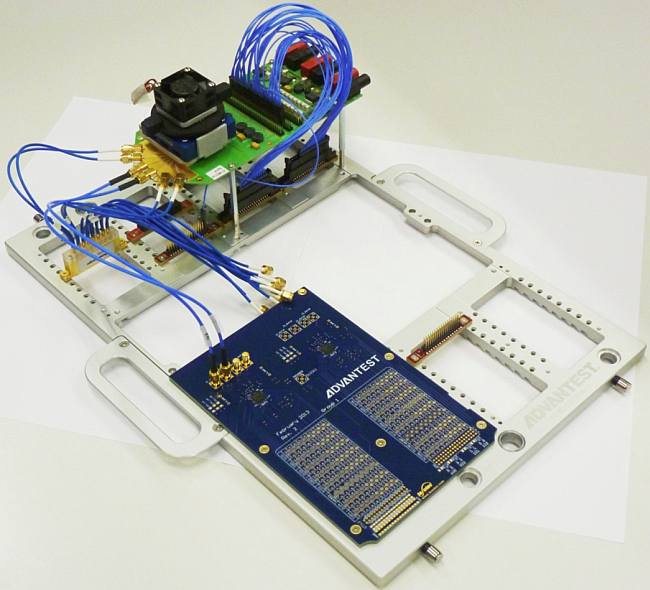
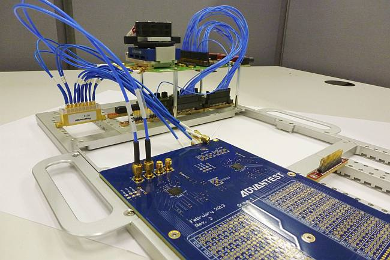
V93000 hybrid loadboard: anti-pogo stiffener
The V93000 hybrid loadboard/anti-pogo stiffener is a modified stiffener that allows the use of standard loadboards and anti-pogo assemblies that will be presented in the next sections. The only drawback is that it does no longer provide the EEPROM pockets as on the standard stiffener which means that it will not be compatible with DUT loadboards that use the stiffener EEPROM pockets. Apart from this it is fully compatible with the standard version of the V93000 stiffener. There is a small and large stiffener version. The figure below shows pictures of the large and small size hybrid stiffeners.
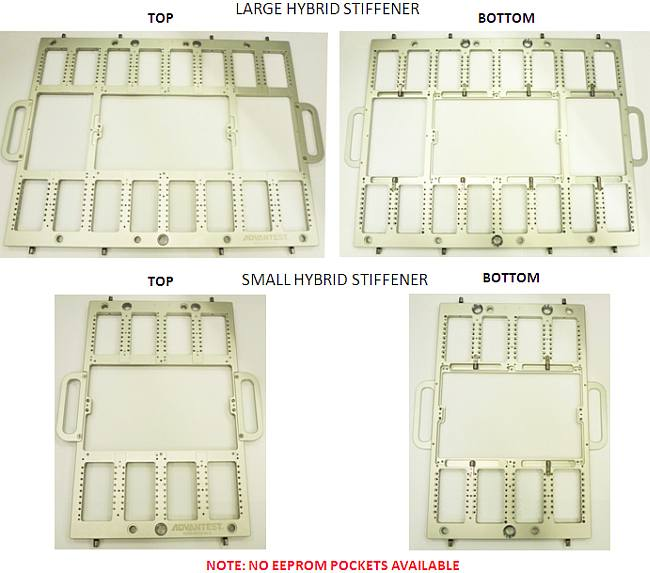
In the picture below is an example of using the hybrid loadboard/anti-pogo stiffener with 1/4 size DUT loadboard, an anti-pogo coaxial assembly and several anti-pogo PCBs that will be discussed on the next sections.
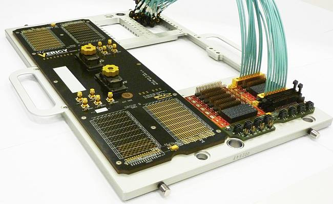
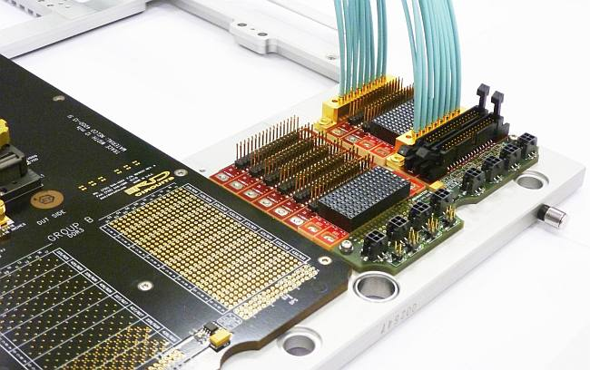
Anti-pogo high performance coaxial assembly
The anti-pogo assembly can be attached to any pogo location when using the hybrid loadboard/anti-pogo stiffener. The figure below shows an example of this assembly with a total length of 50 cm and male SMA connectors. The cable length and the connector type can be customized depending on the application requirements. The assembly can be easily attached by using an M3x12 mm socket head screw as shown also on the figure below.
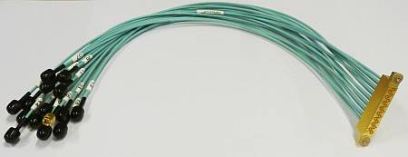
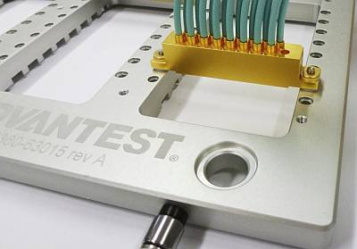
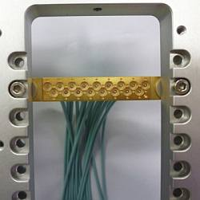
The anti-pogo assembly example shown above has excellent signal integrity and is superior in performance to any PCB test fixture.
Below are the insertion loss results for an anti-pogo coaxial cable assembly with 27 cm. The measured -3 dB is at 17.4 GHz with no resonances till 40 GHz. Although the insertion loss will depend on the cable assembly length, this assembly can be used for high-speed digital signals even at data rates of 16 Gbps. Note that the pin-electronics equalization that is available in some of the V93000 digital modules is not considered on this measurement and in that case the performance will be even better.
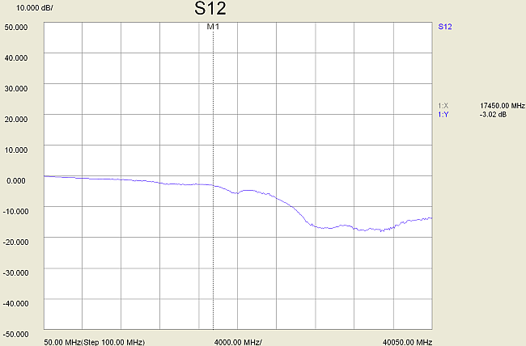
Standard pogo channel header connector universal access board
This board allows to access the channels of a standard pogo assembly (HSM6800 double density pogos and PS1600 VHD are not supported) using a SAMTEC TSM-117-03-S-DV SMT connector with a 2.54 mm pitch header type connectors as shown in the figure below. Each board covers one pogo location and it requires the hybrid stiffner. The board can be easily attached by using an M3x12 mm socket head screw.
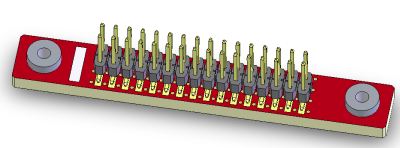
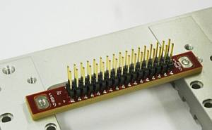
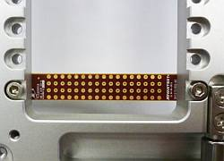
This board can be used for signals with frequency contents to 1.5 GHz as shown on the measurement results below. The measurement results include a 40 cm header to male SMA coaxial cable but does not take into account any equalization from the ATE pin-electronics which could further improve the performance.
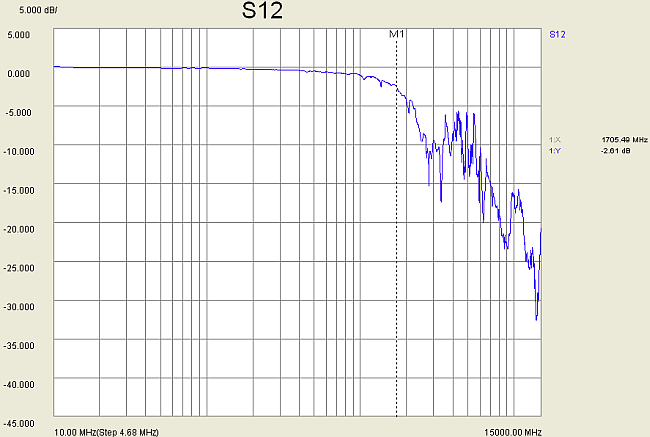
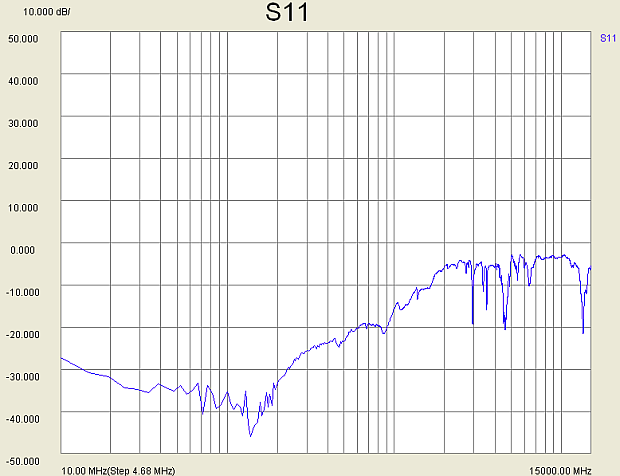
Below is a TDR measurement showing the transition from the ATE pogo assembly to the PCB with the header connector and then to the coaxial cable.
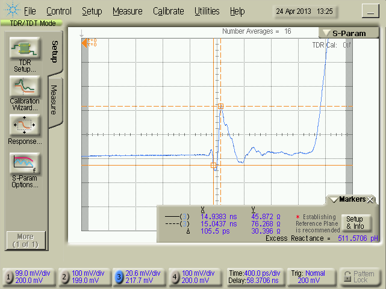
The test engineer can use different types of coaxial assemblies depending on the mating connector on the evaluation board (for example, female header to SMA). There is also a shrouded version of this PCB as shown below that uses a 3M N4634-2300-RB connector.
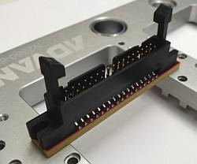
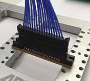
CSDPS32/CSDPS128 universal access board
This board allows accessing the channels of a CSDPS32/CSDPS128 pogo location using a standard male header type connector as shown in the figure below. Each board covers one pogo location and it requires the hybrid stiffener. The board can be easily attached by using an M3x12 mm socket head screw.
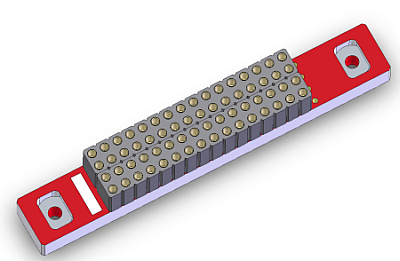
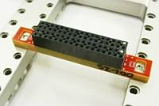
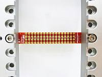
This PCB uses a SAMTEC PHF-117-01-L-D-017 connector that is rated to 5A at 40 degrees Celsius which provides a lot of margin for the DPS32 maximum current. For connecting to an evaluation board or instrument the test engineer can use a 2.54 mm pitch male header connector with an appropriate connector on the other side of the cable.
MS-DPS / UTILITY universal access board
This board can be used to access the V93000 MS-DPS, the utility line power supplies and some of the utility R/W pins. Below is a picture of the board.
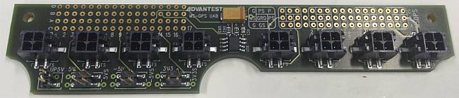
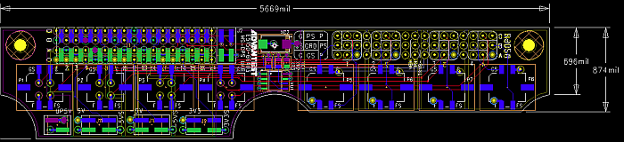
Features:
- Access to all MS-DPS channels.
- Support for the new 256 utility line.
- Access to the standard 5V utility power supply using a pin-head connector.
- Access to the new 5V, -5V and 3.3V utility power supplies using pin-head connectors.
- Access to 16 utility read/write lines.
- Can be used with a standard stiffener also.
- Uses Molex 43045-0418 connector for the MS-DPS channels with the pin assignment below:
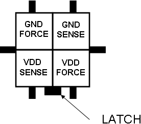
Cable Assemblies
Cable assemblies for different PCB board presented here can be ordered for example from Joy Signal Technology: (http://www.joysignal.com/products/connectors). Some possible examples are shown in the figure below.
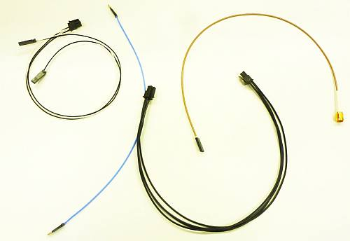
Future work and obtaining UDI components
Apart from the components shown in the previous sections, we continue to improve the current components and develop new components. Also, the test engineer can use the hybrid stiffner approach and develop its own custom made PCB components.
If you have additional questions or you would like to order some of the components please contact your local Advantest support team which in turn can contact the authors or the Advantest test cell innovations team.
Universal PCB test fixtures
Apart from the UDI components discussed in the previous sections, Advantest had also developed in the past several different board that do not require the hybrid V93000 stiffener and that can be of use for the test engineer using the V93000 ATE platform.
SMP universal access board
This board can be used with the V93000 P1000, PS400, PS800, PS3600, PS1600 and PS9G pin electronics models. Below is a picture of the board.
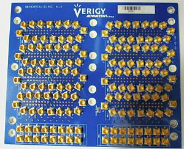
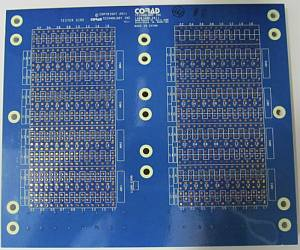
This board can access all the channels by assembling it in two different positions using the different assembly holes.
Features:
- All traces are phase matched.
- SMP connectors (Rosenberger 19S101-40ME4).
This board can be ordered from Corad using the part number "BBHP93XPCAL/DIAGC Rev E (A30381 Rev. E)"
Contact: michael@corad.com
PS9G Universal access board
This board can be used with the V93000 P1000, PS400, PS800, PS3600, PS1600 and PS9G pin electronics models. Below is a picture of the board.
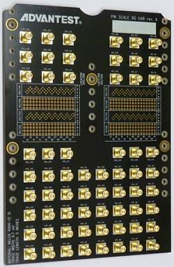
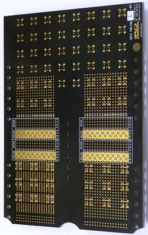
This board can access all channels by assembling it in different positions using the different assembly holes to cover all pogo locations in one card cage.
Features:
- All traces are phase matched with a trace length of 5 inches (12.7 cm).
- Uses a 9.7 mil wide stripline design in Nelco 4000-13 SI. All vias backdrilled.
- SMA connectors (Rosenberger Rosenberger 32K10K-400) using optimized footprint.
- Ultra high-speed (UHS) pogo via design for maximum performance.
This board can be ordered from R&D Circuits using the part number "RD10260B"
Contact: sales@rdcircuits.com
PS-HX Universal Access Board
This board is intended to be used with the V93000 PinScale HX pin electronics model. Below is a picture of the board.
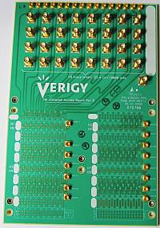
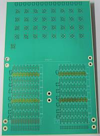
This board can access all the PinScale HX channels in a card cage with the standard configuration. It can also be used for accessing other type of V93000 channels but in that case it can only access a limited number of them.
Features:
- All traces are phase matched.
- Stripline signal trace design with a length of 10 inch (25.4 cm) for the PinScale HX channels. All vias are backdrilled.
- SMA connectors (Rosenberger 32K10K-400) using optimized footprint for the high-speed TX/RX pins.
- SMP connectors (Rosenberger 19S101-40ME4) for the other signal pins (jitter injection, tracking, etc.) and also for the 101 pogo position.
- Ultra high-speed (UHS) pogo via design for maximum performance.
This board can be ordered from Altanova using the part number "PinScale HX UAB 1878".
Contact: accounts@altanova1.com.
HSM6800 universal access board
This board can be used with the V93000 P1000, PS400, PS800, PS3600, PS1600, PS9G and HSM6800 pin electronics models. Below is a picture of the board.
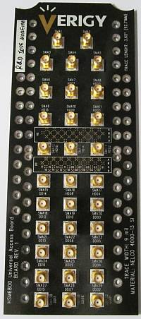
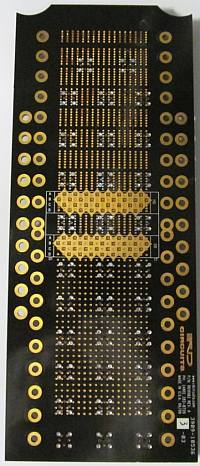
This board can access all the channels by assembling it in different positions using the multiple assembly holes. This is a high-performance board intended for applications in the range of 12.8 Gbps.
Features:
- All traces are phase matched with a target trace length of 3.65 inch (9.271 cm).
- Uses a 9 mil wide stripline design in Nelco 4000-13 SI. All vias are backdrilled.
- SMA connectors (Rosenberger Rosenberger 32K10K-400) using optimized footprint.
- Supports HSM6800 high density configuration.
This board can be ordered from R&D circuits using the part number "RD10182".
Contact: sales@rdcircuits.com.
Long interconnect board
This board can be used with the V93000 P1000, PS400, PS800, PS3600, PS1600, PS9G and HSM6800 pin electronics models. Below is a picture of the board.
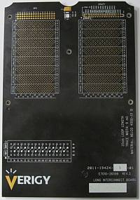
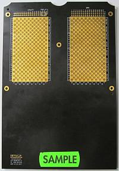
This board creates a loopback between pin-electronics channels through loopback trace with the pin assignment shown below:
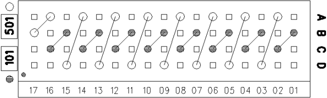
Features:
- All traces are phase matched with a look length of 25 cm (via length included on phase matching). All vias are backdrilled.
- Uses a 9 mil wide stripline design in Nelco 4000-13 SI dielectric.
- Supports HSM6800 high density configuration.
This board can be ordered from R&D Circuits using the part number "RD101168", contact: sales@rdcircuits.com.
MCC Sampler (E9762A/B) universal access board
This board can be used with the V93000 MCC Sampler (E9762A/B) models. Below is a picture of the board.
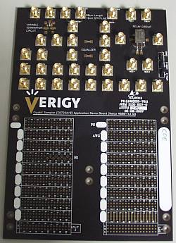
This board has some flexibility regarding the channels it can access by assembling it in two different positions using the different assembly holes.
Features:
- All sampler traces are phase matched.
- SMA connectors (Rosenberger Rosenberger 32K10K-400) using optimized footprint.
- One mechanical relay test structure (NAIS ARJ20A).
- Termination circuit and equalizer test structures (not assembled).
This board can be ordered from Altanova using the part number "2130".
Contact: accounts@altanova1.com.